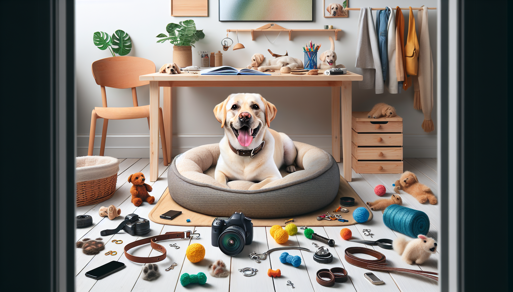

Being a dog owner is a joy filled with companionship, love, and sometimes a little chaos. Whether you're a first-time pet parent or have years of experience under your belt, having the right accessories can make all the difference in managing your pup’s needs and enhancing their happiness. In this guide, we’ll walk you through the top 10 accessories every dog owner should have. These essentials not only ensure your furry friend’s comfort but also make your life as a dog owner a whole lot easier.
No dog accessory list is complete without a sturdy leash and a comfortable collar. A durable leash is essential for walk times and adventures, while a well-fitted collar that doesn’t chafe is crucial for your dog’s comfort and safety. Consider adjustable options with quick-release buckles for added convenience.
Your dog deserves a cozy retreat after a day of play. A high-quality dog bed provides support for their joints and a dedicated space for them to relax. Look for beds with removable covers for easy maintenance and materials that suit your dog’s size and sleeping habits.
Toys are more than just fun for dogs—they’re a necessity for mental stimulation and exercise. Interactive toys like puzzle feeders can keep your dog entertained and engaged, helping to prevent boredom-related behaviors. Be sure to select toys that are safe and appropriate for your dog’s size.
Maintaining a clean environment is part of being a responsible pet owner. Invest in a good quality pooper scooper or biodegradable waste bags to make clean-up easy and environmentally friendly. A hands-free waste bag dispenser attached to your leash can also be very convenient during walks.
Regular grooming is vital for your dog’s health and appearance. Equip yourself with a brush suited to your dog’s coat type, nail clippers, and dog-friendly shampoo. Proper grooming helps reduce shedding, prevents matting, and keeps your dog looking their best.
For dog owners who love to travel, having the right gear is key. A sturdy travel crate, collapsible water bowl, and seat belt harness will keep your dog safe and comfortable during car rides. These accessories are great for ensuring your pet remains secure and hydrated on the go.
Even with the most careful precautions, accidents can happen. Ensure your dog can be easily identified if they get lost by equipping them with personalized ID tags. Include your dog’s name, your phone number, and any essential medical information to improve the chances of a safe return.
Feeding your dog from high-quality bowls is important for their health. Stainless steel or ceramic bowls are great choices as they’re easy to clean and don’t harbor bacteria. Consider elevated feeders for large breeds or older dogs to aid their digestion.
Training is an ongoing process throughout your dog’s life. Accessories like clickers, treat pouches, and training pads can help in reinforcing positive behavior and making training sessions effective and fun for both you and your pet.
Depending on your climate, your dog may benefit from protective clothing. Raincoats, booties, and even sweaters can keep your dog comfortable and safe from harsh weather conditions. Ensure any clothing has a snug fit and doesn’t restrict movement.
As a dog owner, your main goal is to provide a happy, healthy life for your furry friend. By equipping yourself with these top 10 accessories, you’ll be well-prepared to meet your dog's needs and enjoy all the wonderful moments that come with pet ownership.
Looking for personalized pet products? Shop SnoutAndAbout on Etsy for unique, custom items that celebrate your love for your pet!